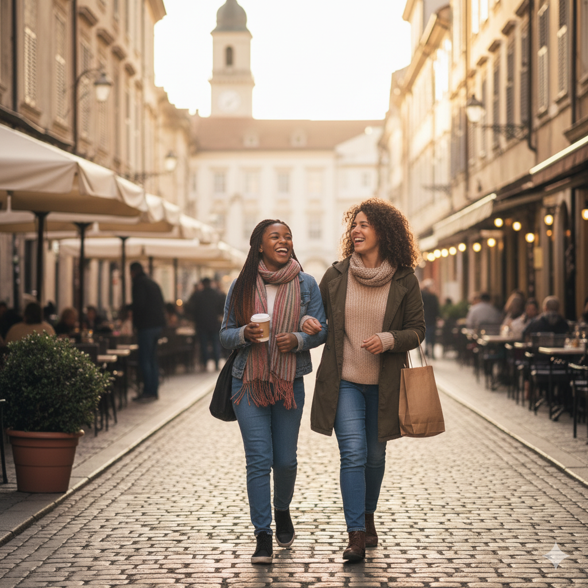

Nickname (Biệt danh): licorice
Phương châm sống: "Life is a blank canvas, paint it beautiful." (Cuộc sống là một bức tranh trống, hãy vẽ nên điều tươi đẹp.)
Sở thích (Hobbies):
Vẽ tranh digital (màu nước/thiết kế nhân vật).
Đọc sách (đặc biệt là thể loại tiểu thuyết giả tưởng và sách triết lý).
Nghe nhạc Lo-fi và nhạc không lời khi làm việc.
Thích lang thang ở các phòng tranh hoặc khu phố cổ để tìm cảm hứng.
Sở trường (Strengths):
Kỹ năng mỹ thuật: Có khả năng phối màu tốt, sử dụng thành thạo các phần mềm thiết kế.
Tính cách: Kiên nhẫn, tỉ mỉ, có khả năng tập trung cao độ khi làm việc sáng tạo.
Tư duy: Khả năng lên ý tưởng và xây dựng kịch bản (storytelling/storyboarding).
Yêu/Thích (Loves/Likes):
Mùi hương của giấy và sách cũ.
Những buổi chiều có mưa nhẹ và không khí mát mẻ.
Đồ ăn ngọt (chocolate, tiramisu).
Những không gian yên tĩnh để có thể tập trung vào suy nghĩ.
Ghét (Hates/Dislikes):
Tiếng ồn lớn và sự hỗn loạn không cần thiết.
Sự vội vàng, làm việc dưới áp lực thời gian quá gấp.
Những người thiếu tinh thần hợp tác hoặc không tôn trọng công sức người khác.
Ước mơ (Dreams):
Trở thành một Họa sĩ Minh họa (Illustrator) chuyên nghiệp, có tác phẩm được xuất bản quốc tế.
Mở một phòng trưng bày nhỏ kết hợp quán cà phê sách của riêng mình.
Dự định tương lai (Future Plans):
Hoàn thành khóa học chuyên sâu về Thiết kế Đồ họa và Animation.
Xuất bản tập truyện tranh ngắn đầu tay tự mình vẽ và viết kịch bản.
Nickname (Biệt danh): chípp
Phương châm sống: "Go explore! Don't limit your challenges, challenge your limits." (Hãy đi khám phá! Đừng giới hạn thử thách của bạn, hãy thử thách giới hạn của bạn.)
Sở thích (Hobbies):
Chạy bộ (đặt mục tiêu tham gia Half Marathon sắp tới).
Leo núi, đi bộ đường dài (hiking) và cắm trại (camping).
Học thêm ngôn ngữ mới (hiện tại đang tự học tiếng Tây Ban Nha).
Nghiên cứu về văn hóa và địa lý các nước.
Sở trường (Strengths):
Giao tiếp: Tự tin thuyết trình trước đám đông, khả năng truyền động lực và tạo năng lượng tích cực.
Tổ chức: Tổ chức sự kiện, lập kế hoạch chi tiết cho các chuyến đi/dự án.
Thể chất: Sức khỏe và sự dẻo dai tốt.
Yêu/Thích (Loves/Likes):
Ánh nắng mặt trời rực rỡ và bầu trời trong xanh.
Cảm giác chinh phục khi hoàn thành một mục tiêu khó khăn (đỉnh núi, mốc chạy bộ).
Cà phê đen đá không đường.
Du lịch bụi (backpacking) và gặp gỡ những người mới.
Ghét (Hates/Dislikes):
Sự trì hoãn (procrastination) và lười biếng
Những người thiếu trách nhiệm hoặc thất hứa.
Không có kế hoạch rõ ràng cho công việc/cuộc sống.
Ước mơ (Dreams):
Hoàn thành chuyến du lịch "vòng quanh thế giới" (ít nhất 5 châu lục).
Tham gia một cuộc thi Marathon quốc tế chính thức (ví dụ: Berlin Marathon).
Dự định tương lai (Future Plans):
Lấy bằng quản lý dự án (Project Management) hoặc Marketing.
Sử dụng kiến thức kinh nghiệm để khởi nghiệp một chuỗi cửa hàng cung cấp dụng cụ thể thao và trekking chuyên nghiệp.
Đạt được trình độ giao tiếp trôi chảy bằng tiếng Pháp.